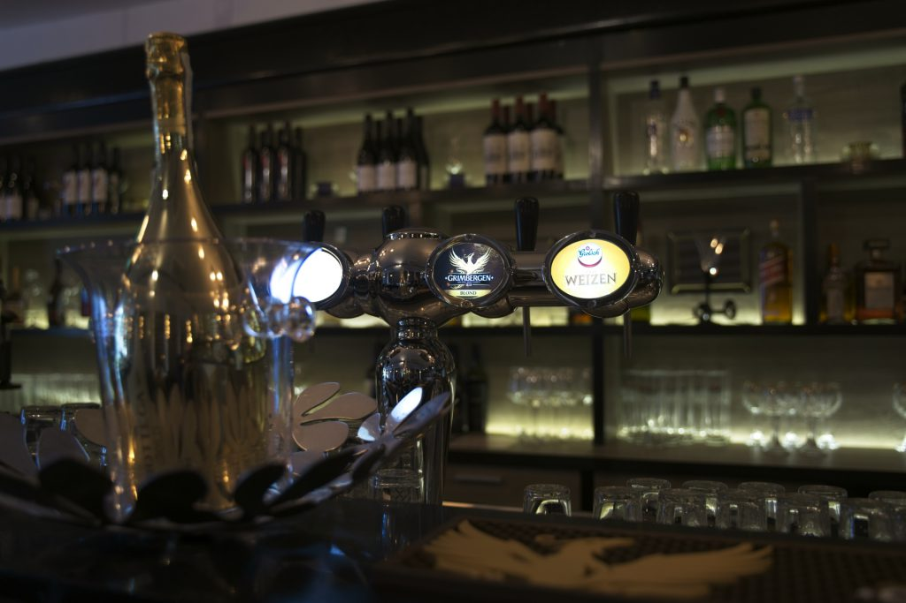
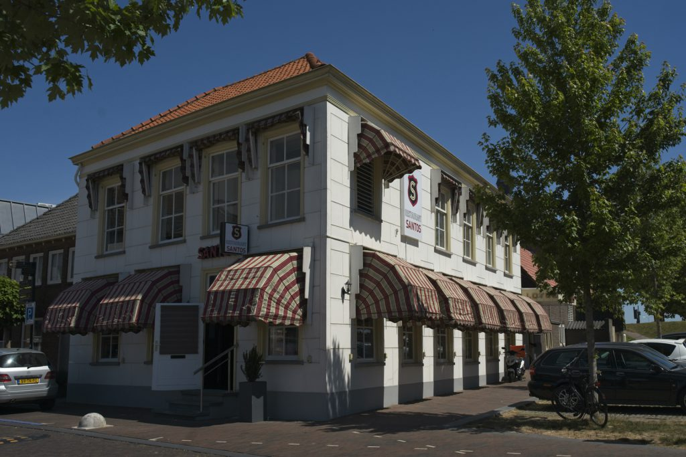

Westluidensestraat 49, Tiel
Van spare-rib tot lamskotelet
Grillrestaurant Santos in Tiel. Jarenlange ervaring, een nieuw restaurant, en naast vlees en vis ook vegetarische gerechten.
Een nieuw grillrestaurant met jarenlange ervaring
Bij Santos draait het om de grill: spare-ribs, lamskoteletten, steaks en mixed grills, maar ook vis, kip en vegetarische schotels. Elk hoofdgerecht komt op tafel met friet, salade, brood en saus.
Neem plaats aan de bar, aan een van de tafels in de zaal of op de leren hoekbank. Liever thuis eten? Bestel telefonisch en haal het zelf op.
Naar de menukaart

Afhalen
Afhalen is bij ons snel en eenvoudig: er is ruimte om even kort te parkeren. Bel uw bestelling door en haal hem op aan de Westluidensestraat.
De keuken is open van 14.00 tot 22.00 uur, ook voor afhalen.
Bel 0344 785 368Openingstijden
| Maandag | 14.00 – 22.00 |
|---|---|
| Dinsdag | gesloten |
| Woensdag | 14.00 – 22.00 |
| Donderdag | 14.00 – 22.00 |
| Vrijdag | 14.00 – 22.00 |
| Zaterdag | 14.00 – 22.00 |
| Zondag | 14.00 – 22.00 |
Keuken open van 14.00 tot 22.00 uur, ook voor afhalen.
Reserveren & contact
Reserveer uw tafel of bestel om af te halen via
0344 785 368- Adres
- Westluidensestraat 49
4001 NE Tiel - info@restaurant-santos.nl